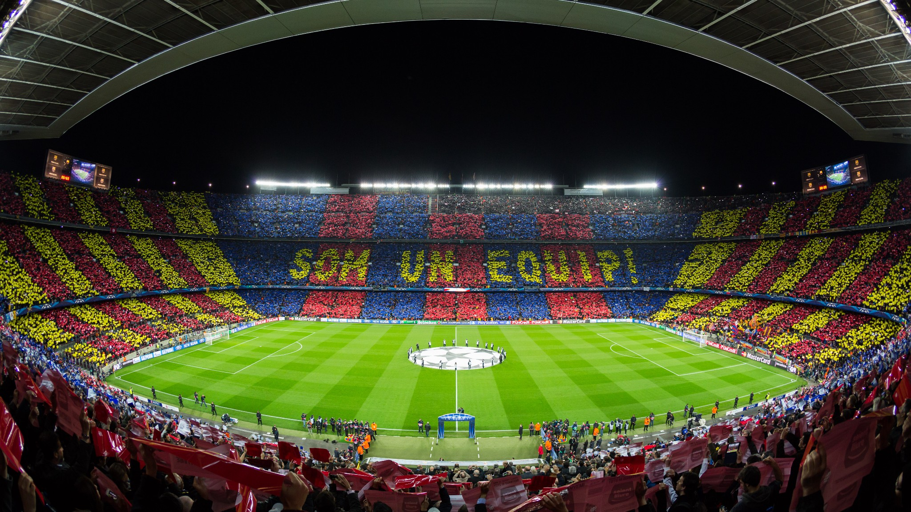
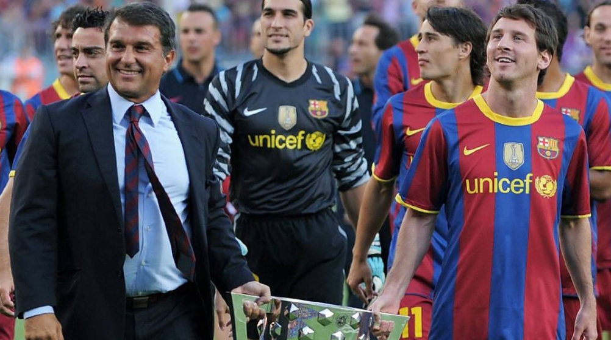

Mes que un club... El Futbol Club Barcelona ha sido uno de los mejores clubes de la historia, demostrando su supremacia a lo largo de estos años con los fichajes de grandes jugadores y la famosa Masia que es una de las academias juveniles mas exitosas de la historia
25/11/21
Contexto
Se demuestra que Fc Barcelona ha sido de los mas grandes en la historia.
Desarrollo
Si conoces las bases del fútbol, seguramente habrás oído hablar del "Barca" o "Barcelona". Esto se debe a que éste equipo de fútbol es el más grande de todos.
A lo largo del tiempo, éste equipo de fútbol español, se ha ido desarrollando para volverse en la "gran bestia" que es ahora. Hasta salió en el ánime Súper Campeones! Dime otro equipo que haya hecho esto.
Motivación
La Motivación para realizar el blog de este tema es mi fanatismo por el equipo Barcelona.

El Camp Nou es un mitico estadio en donde el FC Barcelona ha logrado la mayoria de sus increibles triunfos y logros a lo largo de estos años.
Ranking
25/11/21
Ranking de mejores jugadores del FCB
A continuación se realizará un ranking del "menos mejor" al mejor jugador que ha tenido el FCB.
Sitios oficiales
25/11/21
Lista con sitios oficiales del tema
Esta lista le puede resultar de utilidad al lector ya que tiene información oficial en relación al tema.
Aqui estan algunas de las referencias para apoyar lo anteriormente establecido
Aqui estan las referencias usadas.
Video de Youtube
15/01/22
La historia del FC Barcelona, publicado en 2018 por la cuenta que se dedica a hacer Draw My Life
Este video ayuda a conocer mejor la historia desde el principio de este gran club de futbol
El dueño de este video explica de manera sencilla y dinamica la larga y vasta historia del FC Barcelona y creo que lo hace de una muy buena manwra la verdad ya que lo explica muy bien
Mi opinion sobre el FC Barcelona respecto a su historia
14/01/22
El inicio de una gran era
Todos conocemos el gran equipo que es el Futbol Club Barcelona hoy en día, pero no muchos toman en cuenta que eso no fue asi siempre, tuvieron que pasar años despues de su fundacion para que empezaran a sobresalir como equipo, grandes figuras y entrenadores pasaron a lo largo de la historia del club pero todo comenzo cuando un tal Johan Cryuff emepzo a estar al mando de este gran equipo implementando su estilo de juego:
Johan Cryuff llego como entrenador al Futbol Club Barcelona en 1988 en crisis ya que el equipo no estaba dando los rrsultados que la aficion quería, entonces es aqui cuando entro el famoso ADN Barca que este consiste en un estilo de juego de pases, posesion, juego entre lineas. Con esto el Barcelona empezo poco a poco ver resultados positivos y demostrandole a sus aficionados que el equipo estaba de vuelta
Yo considero que este fue el inicio de la gran era ya que el equipo logro ganar cuatro ligas españolas seguidas y ese equipo de Barcelona también ganó la primera Champions League de su historia con un tiro libre de Ronald Koeman en la final de Wembley ante la Sampdoria en 1992. 1 Aqui fue cuando el Barcelona empezo a demostrar que era un equipo en busca de grandes cosas
Estáis en Wembley y vais a jugar una final de la Copa de Europa, así que salid ahí fuera y disfrutad.
Johan Cryuff en la final de 1992 en Wembley antes de que sus jugadores salieran al campo
La época dorada del club
Si bien se puede decir que Johan Cryuff dejo las bases de el famoso ADN Barca por muchos años en el equipo, hubo una persona que supo aproechar el maximo potencial del equipo y la que personalmemte ha sido la epoca y el juego que mas he gozado del FC Barcelona en todos estos años que los he visto, y esa persona es Pep Guardiola
Pep Guardiola es para muchos y me incluyo en esas personas, el mejor tecnico que ha tenido el Futbol Club Barcelona en la historia debido a dos factores: La cantidad de titulos conceguidos en su tiempo como Director Tecnico y su estilo de juego el Tiki-Taka y a continuacion explicare estas dos cuestiones mas a fondo
La primera cuestion es el numero de titulos. A lo largo de su carrera como entrenador del Futbol Club Barcelona, Pep logro conseguir 14 títulos con el FC Barcelona (2008-2012) 3 Ligas de España (2008-09, 2009-10, 2010-11)2 Copa del Rey (2008-09, 2011-12) 3 Supercopa de España (2009, 2010, 2011)2 Champions League (2008-09, 2010-11) 2 Supercopa de Europa (2009, 2011) 2 Mundial de Clubes (2009, 2011) Es el técnico del Barcelona que más títulos ha logrado en toda la historia. Superando a Johan Cruyff (11), uno de sus mentores, y no siendo superado por Luis Enrique (9) 2
Y la segunda cuestion es ese famoso estilo de juego llamado El Tiki-Taka, este estilo de juego que implemento Pep al FC Barcelona hacia que el equipo jugara a la posesion del balon, apertura de espacios en el area rival, crear superioridad numerica en casi todos los sectores del campo, darle libertad al falso delantero (que en esos dias era Messi), simplemente hizo que todo el equipo brillara con jugadores como Messi, Iniesta, Busquets, Xavi, David Villa, Puyol, Pique, Valdes, etc... En fin esa fue la generacion dorada que logro tantos titulos con Pep.
Las personas que cambiaron el futbol por siempre
Si bien ya he mencionado a ciertos personajes que han ayudado de manera fundamental en mi opinion a llevar a la gloria al FC Barcelona, quisiera mencionar a las personas que en mi opinion han sido fundamentales para que el Futbol Club Barcelona sea lo que es hoy en dia.
Lionel Messi
Sin duda todos sabemos quien es Lionel Messi, pero para los que no hare un muy breve resumen. Messi es el maximo goleador de la hisoria del club con 670 goles en 775 partidos con el club3 Podria nada mas usar ese dato, pero tambien puedo decir que el n¡gano nada mas y nada menos que 37 titulos con el Batrcelona4, tambien puedo decir que el gano con el Barcelona 7 balones de oro, que es el titulo que reconoce al jugador que mejor desempeño ha tenido a lo largo de esa temporada
Andres Iniesta, Sergio Busquets y Xavi Hernandez
Sería un error terrrible poner por separado a estas grandes figuras del futbol español esta fue la media que conquisto europa por un gran rato, esta media daba miedo, ya que por ejemplo, Messi en mi opinion nunca huboera llegado a ser lo que es hoy sin estas 3 figuras, muy poca gente los toma en serio ya que no son delanteros, pero no saben lo fundamental que fueron al futbol ya que ellos justamente controlaban el estilo de juego del Tiki-Taka de Pep Guardiola, yo creo que sin ellos nostros no podriamos comprender este maravilloso y magico estilo de juego
Joan Laporta
Joan Laporta fue el rpesidente Deportivo en el tiempo que el Futbol Club Barcelona apenas se estaba reestructurwando,tuvo que sacar a jugadores como Ronaldinhio, Samuel Eto y Deco ya que no eran tan profesionales en ese punto de su carrera, Laporta ayudo mucho con ese cambio generacional que la plantilla estaba necesitando, confiando con la gnete de La Masia que es la cantera del club, algo que ya no se estaba haciendo desde hace tiempo, tambien Laporta trajo de regreso a casa a Gerard Pique (quien antes estaba en Inglaterra y desde ese instante Pique se volvio una leyenda para el club), el gran presiente que no le tuvo miedo al cambio

Messi y Laporta celebrando el sextete del 2010-2011.
Video de Youtube
15/01/22
El futuro es prometedor para el FC Barcelona
Este video da a entender que pese a que el FC Barcelona no este en su mejor momento ahora, tiene jugadores jovenes muy buenos que ayudaran al club a regresar a lo mas alto
Aqui voy a explicar en mi video de manera sencilla que el Barcelona no tiene mucho por que preocuparse en el futuro ya que los jugadores de la cantera estan marcando diferencia ahorita y les queda todavia mucha carrera por delante
 Mes que un club... El Futbol Club Barcelona ha sido uno de los mejores clubes de la historia, demostrando su supremacia a lo largo de estos años con los fichajes de grandes jugadores y la famosa Masia que es una de las academias juveniles mas exitosas de la historia
Mes que un club... El Futbol Club Barcelona ha sido uno de los mejores clubes de la historia, demostrando su supremacia a lo largo de estos años con los fichajes de grandes jugadores y la famosa Masia que es una de las academias juveniles mas exitosas de la historia Video de Youtube
Video de Youtube  Mi opinion sobre el FC Barcelona respecto a su historia
Mi opinion sobre el FC Barcelona respecto a su historia